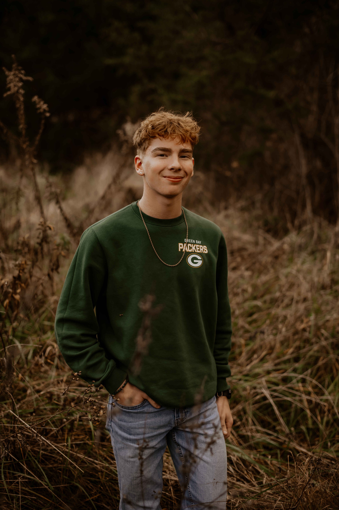
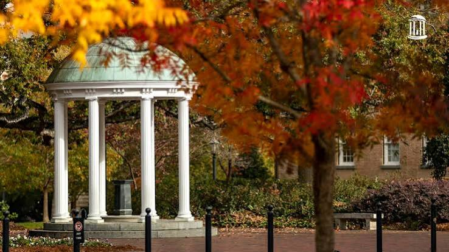

Connor K Johnson
University of North Carolina at Chapel Hill

"Science is not done alone. It is done through talking with others and sharing that progress is made."
- Carol W. Greider

I am from Rolla, Missouri but attend school as part of the class of 2030 at the University of North Carolina at Chapel Hill. I plan to major in neuroscience and minor in neurodiagnostics and sleep science. I am also a Red White and Carolina Blue scholar and member of Honors Carolina. I’m currently pre-med because I want to have the ability to help a patient and continue to help and be available for them. I previously have been involved in Scouting BSA and have done over 50 hours of community service through the organization. I also participated in a week long summer camp course called National Youth Leadership Training where I served as the Youth Course Lead of Program. My position required me to map out the time of every event as well as decide on the timing of every day. The role taught me how to schedule events and make adjustments throughout as well as how to lead a team. Outside of school I like to do sports and compete in intramural soccer and pickleball. I play tennis and was 4th in our district for singles during high school. I also enjoy things like birdwatching and hiking as well as other nature related things. I enjoy music as well, and play 5 instruments including the jazz guitar. I achieved gold at our state solo and ensemble festival for brass ensemble and also was a part of the district jazz band for trombone. Through music, I had the opportunity to tour Europe where I visited five countries with a band from kids all over Missouri while playing tuba and guitar.
Future Goals:
One of my goals is to gain my EMT certification over the summer and get involved in the medical field. I want to work as an EMT and experience what it is like to help patients. I also plan to take part in research to further my knowledge within the field of neuroscience. I’m very interested in cognition and thinking and what biology is behind that.
By graduation I would like to complete an honors thesis and graduate with honors. I hope to apply to medical school and get in to continue my education in the medical field.